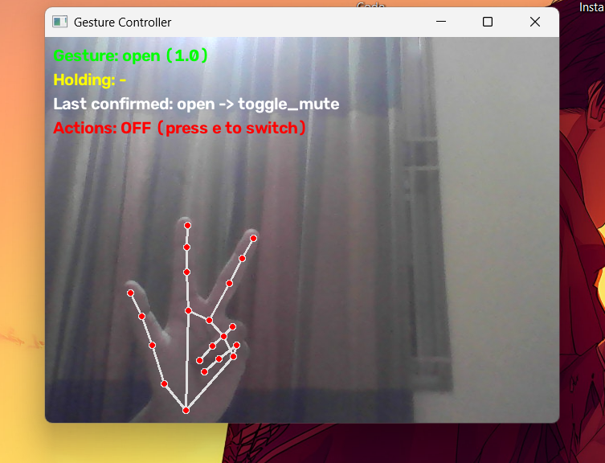
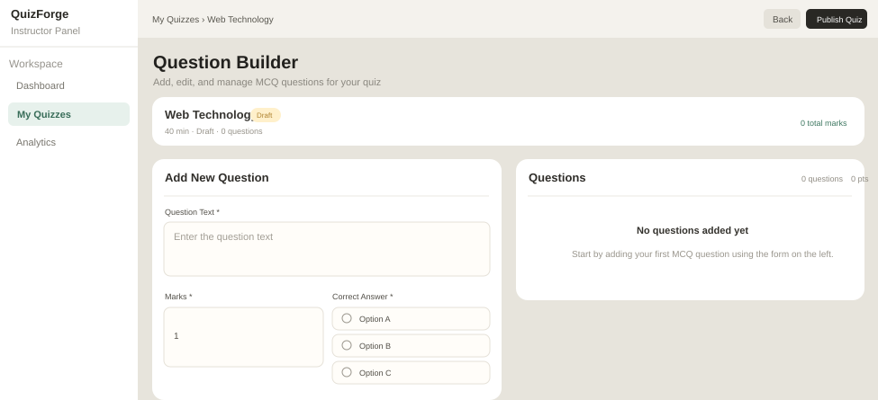
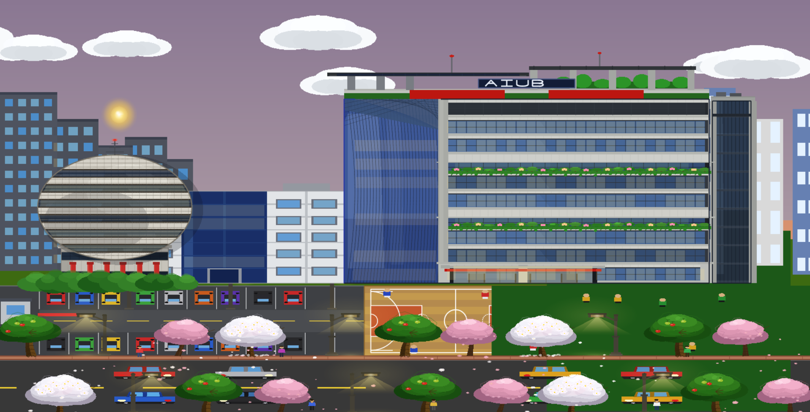
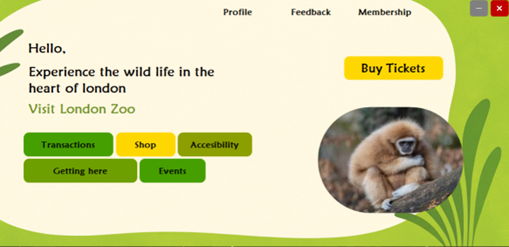
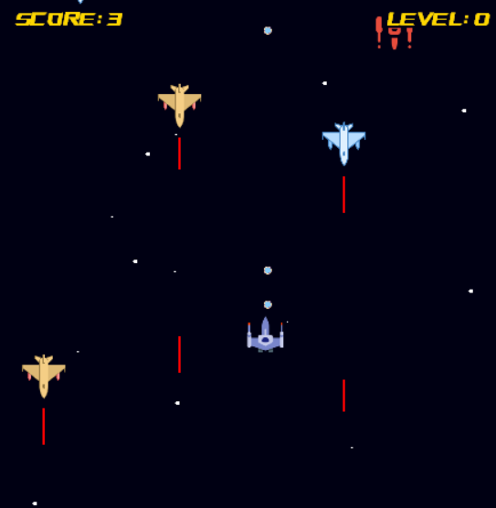
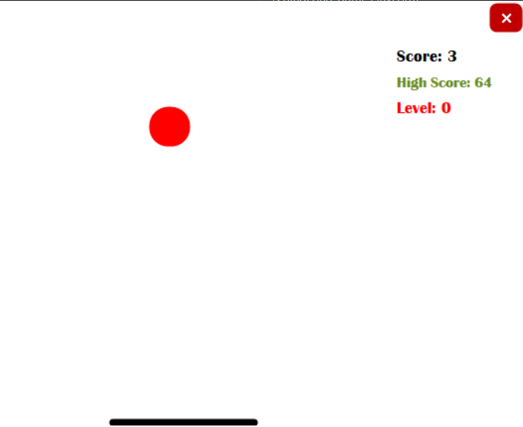

Selected work in machine learning, computer vision, web development, computer graphics, and software projects.

A real-time webcam controller that tracks 21 hand landmarks and recognizes pinch, fist, and open-hand gestures. A KNN classifier and prediction filtering make confirmed gestures control slides and mute audio.
View Project
A role-based PHP and MySQL platform where instructors publish MCQ quizzes, students complete timed attempts, review answers, and compare scores on a leaderboard.
View Project
An animated campus scene built with C++ and OpenGL/GLUT, featuring day and night lighting, moving vehicles and players, weather and seasonal modes, and particle effects.
View Project


A classic table tennis game with simple controls and bouncing ball mechanics.
View Project